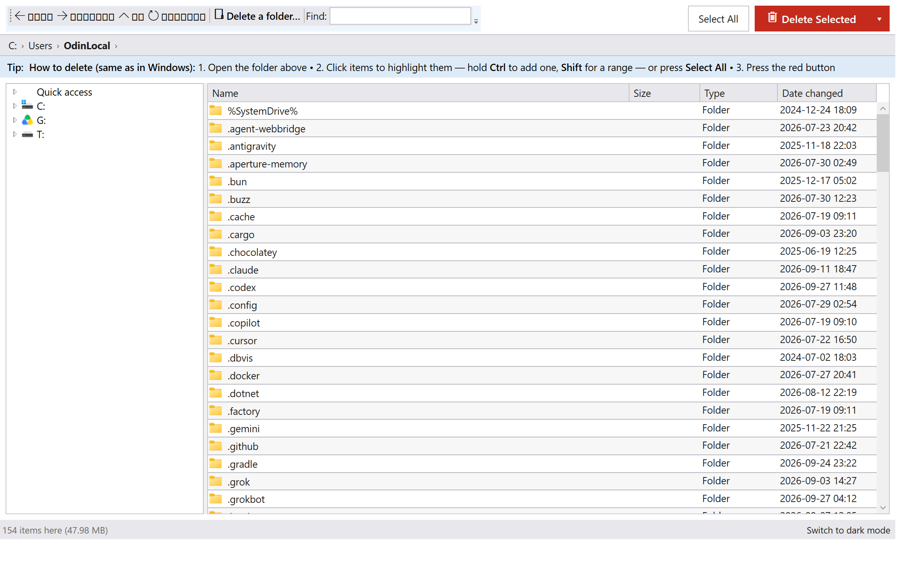

A folder with 100,000 files?
Gone in seconds — not minutes.
FastDelete looks and works like Windows Explorer, but deletes enormous folders about 5× faster than Explorer and never freezes. Pick a folder, press the big red button, done.
⬇ Download FastDelete (free)No installation. Unzip, double-click
FastDelete.exe. Windows 10/11, 64-bit.
1
Open the folder
Click “Delete a folder…” and pick any folder — or browse the list like in Explorer.
2
Select what goes
Click items, hold Ctrl to add, Shift for a range — or press Select All. The red button always shows how many items are selected.
3
Delete
One clear warning (“cannot be undone”), then everything disappears — with a report if anything was locked.
How fast is it?
Deleting the same folder of 10,100 files on the same PC:
2.2 s
FastDelete
5.6 s
PowerShell Remove-Item
10.2 s
Explorer → Recycle Bin
Why people like it
- Feels like Explorer — same clicks, same selection, plus a right-click menu.
- Honest safety — a clear “cannot be undone” warning; a Recycle Bin option is one click away.
- Never follows shortcuts — junctions and links are removed, their targets untouched.
- Handles locked files — a file in use never stops the run; you get a retry list afterwards.
- Pause / resume / cancel — plain-language progress, always responsive.
- Big, readable text — light theme by default, dark mode one click away.
- Long paths & any language — deep folders and non-English names just work.
- Tested — 18 automated tests, including 100k-file runs and hostile cases.
Get it
Download the latest release — or browse the source code and full README on GitHub.